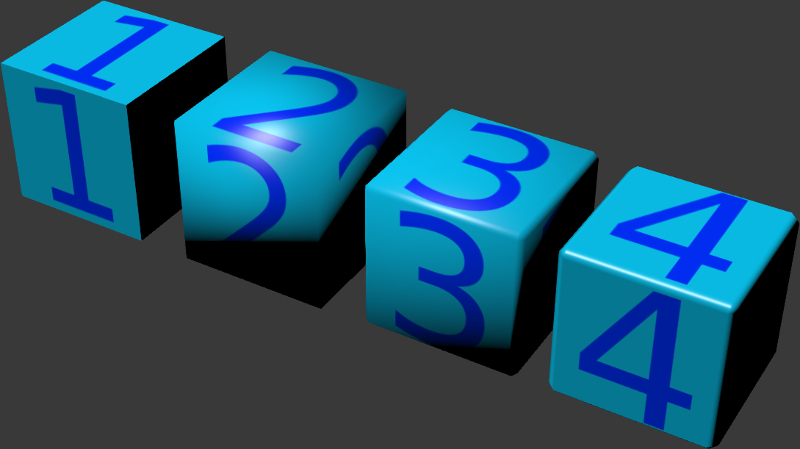
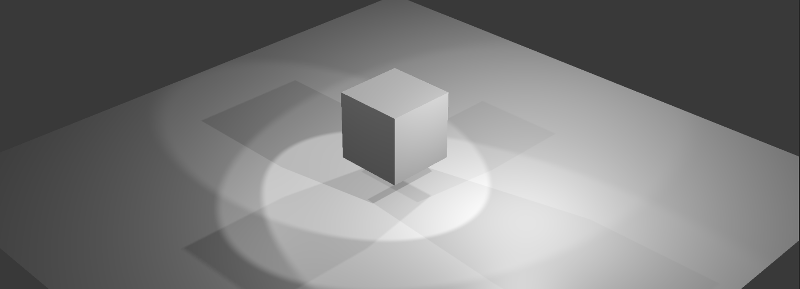

照明、 阴影和背景¶
着色类型¶
照明（着色）取决于法线矢量的方向。支持标准Blender的阴影类型 ： Shading: Flat （面法线被使用），Shading: Smooth （插值顶点法线被使用）以及它们的组合。

如果使用标准工具没法达到所需的效果，您可以使用 normals editor.
不同的阴影类型和使用法线编辑的结果：
{kind=link}
平面着色
光滑着色
平滑阴影 倒角
平滑阴影 倒角 编辑法线
用光源照明¶
一个场景可以有多个（但不小于一个）的不同类型的光源。
光源类型¶
支持下面的光源类型：
- Point
光从一个点均匀传播与逐渐衰减四面八方。
- Sun
光从一个无限平面在一个方向无衰减传播。
- Spot
光从角度限制内的一个点传播时，并逐渐衰减。
- Hemi
半球形。光线从无限半球传播无衰减。
光源设置¶
当选择了一盏灯在 Object Data 标签中修改设置。
{kind=link}
- Color
灯光颜色。默认值是（1.0，1.0，1.0）（即白色）。
- Energy
辐射强度。缺省值为1.0。
- Falloff
衰减型。该值导出，但引擎始终使用
Inverse Square. 它适用于Point和Spot光源类型。默认值是Inverse Square.- Distance
衰减参数。它适用于
Point和Spot光源类型。默认值是25.0。- Specular
创建镜面高光。默认情况下启用。
- Diffuse
做漫反射着色。默认情况下启用。
- Spot Shape > Size
锥角度。它适用于
Spot光源类型。默认值是45度。- Spot Shape > Blend
模糊光斑边缘参数。它适用于
Spot光源类型。默认值是0.15。- Dynamic Intensity
使用该光源，用于计算每天的时间。仅适用于
Sun光源类型。默认情况下禁用。- Shadow > Shadow
使用这个光源计算影子。当多个光源存在应该被使用。默认情况下禁用。
- Shadow > Clip Start
此参数指定离光源的距离，低于该值物体不产生阴影的距离。默认值为1.001。
- Shadow > Clip End
此参数指定离光源的距离，超出后物体不产生阴影的距离。默认值是30.002。
环境照明（环境）¶
该引擎支持环境灯光模拟的3种方法。
平白光照明。
半球形的照明模式，即应当指定视野和天顶的颜色。物体会因为法线和方向填充这两种颜色组成的梯度色。
灯光使用 环境贴图 - 所谓的基于图像的照明。
请注意，环境照明使用了简化的模型，不考虑对象的相互遮挡。
{kind=link}
设置¶
- World > Environment Lighting > Energy
环境照明亮度。缺省值为1.0。
- World > Environment Lighting > Environment Color
选择环境照明模拟的方法:
White- 平照明，Sky Color- 半球模型，Sky Texture- 照明使用的 环境贴图 。默认值是白色。- World > Horizon Color and World > Zenith Color
如果选择了半球模型 (
Sky Color) 可以通过World > Horizon Color和World > Zenith Color颜色选取器指定的地平线和天顶角变化的颜色。建议以激活World > Blend Sky选项为更好的颜色选择。- World > Use Nodes (Cycles)
- If this option is enabled,
Cyclesnodes can be used to set up the environment. Disabled by default. - World > Reflect World
- If this parameter is enabled, environment will also be rendered for reflections (i.e., it will be reflected by mirror surfaces). Disabled by default.
- World > Render Only Reflection
- If this parameter is enabled, environment will be rendered for reflections, but not for the scene itself. Disabled by default.
{kind=link}
阴影¶
阴影对渲染最后的画面格外重要。它们所提供的观看者不仅与有关物体的轮廓的信息，也包含他们的高度和相对位置，光源位置等。
Blend4Web实现以下阴影渲染技术：级联阴影贴图（CSM）和软阴影（PCF）。
多达4个（或3如果SSAO启用）光源可以同时生成阴影。如果 阴影 参数为被超过4光源启用，阴影只能从其中4个中生成的。
{kind=link}
激活¶
在
Object选项卡下启用Shadows: Cast复选框为物体 投射 阴影 。在
Object选项卡下启用Shadows: Receive复选框为物体 接收 阴影 。确保在
Render选项卡中的Shadows选项的值为AUTO或ON。
{kind=link}
设置¶
- Direction
如果有多个光源，建议指定用于阴影计算确切的光源，选择灯光物体通过在
Object Data面板的Shadow > Shadow复选框来启用。- Color
环境照明阴影颜色是由 环境光照 设置确定 。
下列附加设置位于 Render 标签的 Shadows 面板上：
{kind=link}
- 渲染阴影
启用和禁用阴影渲染。可设置
ON，OFF和AUTO。默认设置为AUTO。- 软阴影
此选项使平滑的阴影贴图。默认情况下启用。
- 分辨率
阴影贴图分辨率。默认值为 2048 x 2048px。
- 采样
用于平滑阴影贴图的样品数目。可用值为 4x, 8x 和 16x, 后者是默认值。
- Self-Shadow Polygon Offset
相对于光源定向多边形移位系数。默认值是1。
- Self-Shadow Normal Offset
沿法线移动多边形系数。默认值是0.010。
最后两个参数可以用于减少自阴影的瑕疵。这些瑕疵显示在同一时间投射和接收阴影的物体。Self-Shadow Polygon Offset 参数是更有效的对抗的多边形的内部区域瑕疵，虽然’ Self-Shadow 法线抵消 ‘ 是更好地为边界地区。上述两个参数导致阴影扭曲，因此，我们建议让他们尽可能低的水平。
{kind=link}
注解
从 Point 光源生成的阴影方法与从 Spot 光源的相同，预计由源的 Rotation 参数指定只在一个方向投影。
- Enable CSM
激活的级联阴影模型的使用;显示附加选项。默认情况下禁用。如果
Shadow设置一个以上的光源启用将无法工作。Point和Spot式光源只支持一个阴影级联。
此选项允许下面的阴影生成类型之间进行选择：
它使用一个单一的优化阴影贴图为整个场景通用模型 (
Enable CSM已关闭）。阴影级联 (
Enable CSM被接通）。
- Blur Radius
设置软化阴影模糊比例。默认值是3。零值会产生硬阴影。

软化的阴影可以提高视觉质量和真实感。使用基于图像的技术，这是尤其明显的低分辨率的阴影贴图时，他们隐藏不可避免的齿形的边缘。经常使用软化阴影允许降低分辨率没有实质的质量损失。
通用阴影¶
此选项适合很小场景与数量有限的物体。通过优化应用这样的场景，可以用级联阴影达到更好的阴影质量。此外，此选项是简单和快速的设置，而使用单个阴影贴图极大地提高了性能。
级联阴影¶
注解
这些设置只支持 Sun 光源。级联对其他类型的光源关闭。
为提供可接受的阴影质量，同时也为覆盖了相当大的空间是需要影子生成 （级联） 使用多个阶段。因此，最好的质量级联位于靠近观察者，而最坏的质量级联的距离较远。这个选项适合中到大的场景，例如游戏关卡。
如果启用下列扩展设置会显示：

- CSM Number
阴影级联的数量。从1至4个级联的支持。默认值是1。
- CSM First Cascade Border
第一梯级的大小。默认值是10.0。
- CSM Last Cascade Border
最后级联大小。默认值是100.0。
中间级联的尺寸在两个上述参数之间内插。
注解
记住当设置阴影时，级联尺寸越大，内部的阴影细节越少越差。另一方面，降低 CSM First Cascade Border 参数使得靠近相机的级联缺乏细节。降低 CSM Last Cascade Border 参数强制在靠近相机的距离里阴影消失。然而，当使用软阴影时，由于边缘模糊的原因整体质量将得到改善。

- CSM First Cascade Blur Radius
模糊比用于第一级联。默认值是3。零值会产生硬阴影。
- CSM Last Cascade Blur Radius
模糊比用于最后级联。默认值是1.5。零值会产生硬阴影。
中间级联的模糊半径两个上述参数之间内插。
注解
我们建议开始设置与第一梯级软化阴影（使用 CSM First Cascade Blur Radius) ，然后进行其他级联（使用 CSM Last Cascade Blur Radius) 。通常，最后一个级联可能比第一个需要更少的模糊。这可能是必要的，由于低分辨率以防止在最后一个级联的阴影太褪色，。这也减少了不良自阴影假象。
- Fade-out Last Cascade
平滑消失在最后一个级联。默认情况下启用。
- Blend Between Cascades
平滑的级联之间的界限。默认情况下启用。

背景¶
您可以通过以下方式更改背景：
启用
World > Render Sky, 然后在Blender的World选项卡下设置Horizon Color和Zenith Color。把整个场景放入一个（例如一个立方体或球体）法线指向内部模型的里面，带材料和一个可选的纹理。
在相机前放置一个带一个可选的纹理的材质的面。设置父级为相机。如果需要，调整到这个表面的距离，相机开始和结束剪切平面。
{kind=link}
使用 skydome.
建立程序产生 大气.
用
config.set()方法设置引擎的background_color参数。请注意，Blender的World选项卡下的World > Render Sky必须被禁止。这个值被用作WebGL的clearColor()方法的参数。对于正确的结果，建议将WebGL的背景透明度关闭（alpha参数）。这样的配置在默认情况下引擎的标准网络播放器使用。var m_cfg = b4w.require("config"); var m_main = b4w.require("main"); // gray m_cfg.set("background_color", new Float32Array([0.224, 0.224, 0.224, 1.0])); m_cfg.set("alpha", false); m_main.init(...);
您可以在 canvas 元素之后使用任何HTML内容，作为背景进行渲染。要做到这一点，激活WebGL的背景透明度（
alpha参数）。请注意，Blender的World选项卡下的World > Render Sky必须禁止。想要正确的结果，建议设置完全透明的黑色背景色。这样的配置在Blend4Web SDK的 场景查看器 默认情况下使用。var m_cfg = b4w.require("config"); var m_main = b4w.require("main"); m_cfg.set("background_color", new Float32Array([0.0, 0.0, 0.0, 0.0])); m_cfg.set("alpha", true); m_main.init(...);
参见